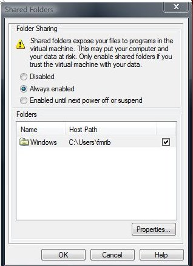
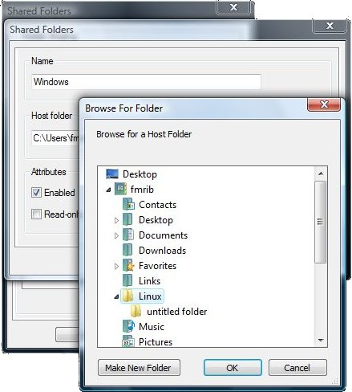
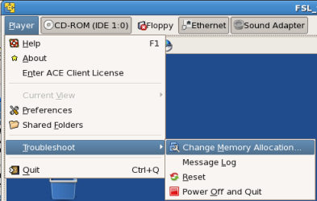
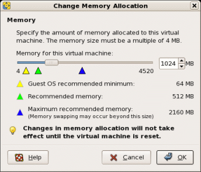

Contents
Introduction
We recommend using a UNIX-based computer (such as a Linux PC, Apple or Sun) for carrying out data analysis. However, if this is not available then you can use FSL on a Microsoft Windows computer by running the Linux version of FSL inside a "virtual Linux machine" (a VM), using a freely available program called 'VMware Player' by VMware. This is fairly easy to setup, and we provide basic installation instructions below, but please note that we cannot in general offer further help for the setup and maintenance of the virtual machine itself - we just offer support on the running of FSL within it.
System Requirements
- Windows XP, Vista or 7 (32bit or 64bit)
- Dual core CPU/ multiple CPU recommended
- 2GB RAM minimum
- Minimum 10GB, up to 30GB, of free disc space (VM image expands as necessary up to the 30GB limit)
Dependencies
The software package VMware Player emulates the core hardware of an x86 machine allowing you to run a second operating system 'in a window'. Virtualisation technology allows the programs running in this VM to achieve speeds approaching that of programs running natively in Windows, as the CPU instruction set doesn't need to be emulated.
The FSL VM (FSLvm) is configured with 1GB of RAM, a virtual hard disk that can grow to 30GB in size, shared (NAT) networking (ie it shares the network connection of your local computer), virtual sound hardware and virtual CD-ROM and floppy drives.
Before you can run the FSL virtual machine, you need to install a Virtual Machine player package. We support the use of version 3.x of VMware's free VMware Player software. Download the software from VMware's site and install this package by following VMware's instructions. Once it is installed and your computer has been restarted, launch VMware Player to complete initial setup.
The FSL Virtual Machine
Once VMware Player is installed, download FSLvm from below. The FSLvm is compatible with Windows XP and Windows Vista/7 and is available in two flavours, a 32 bit version for the majority of Windows installations and a 64 bit version for 64 bit Windows Vista/7.
To find out which version you require see this Microsoft document
Verifying the download
To confirm that the FSLvm package has downloaded correctly, download the appropriate MD5 hash file below to the same folder you downloaded the FSLvm to and use MD5summer to check the files.
Using MD5summer
Run md5summer once as an administrator and choose to associate the .md5 extension with md5summer. Now double click on the downloaded md5 sum file and wait while md5summer checks the file, a green circle to the left of the file name confirms the file's integrity.
FSLvm Installation
Windows/extract_all_files_vista.jpg "Extract all files") FSLvm is a fairly minimal install of the CentOS 5 Linux distribution and is provided as a zip file. To install, decompress the downloaded FSLvm by double clicking on the zip file and clicking on Extract all files in the resulting Windows Explorer window.
FSLvm is a fairly minimal install of the CentOS 5 Linux distribution and is provided as a zip file. To install, decompress the downloaded FSLvm by double clicking on the zip file and clicking on Extract all files in the resulting Windows Explorer window.
The Windows zip expansion wizard will launch. Extract the files to an appropriate location; VMware Player creates a folder in your Documents folder called Virtual Machines (My Virtual Machines under Windows XP) when run for the first time, which is intended for this purpose. Under Windows XP, be sure to create a folder (eg fsl_vm5_32 or fsl_vm5_64 as appropriate) to contain the files if you have more than one VM as the Windows XP zip expansion wizard does not preserve the top level folder of the zip archive.
VMware Player Usage and Configuration
Detailed VMware Player application usage instructions are available from the VMware Player menu's Help entry.
Initial setup
Windows/vmx_file.jpg "VMX file icon") Now that the FSLvm is installed, launch VMware Player from the Start menu and click on the Open icon. In the Open dialogue, browse to the uncompressed FSLvm folder, fsl_vm5_32 or fsl_vm5_64 and double click on the fsl_vm5_32 or fsl_vm5_64 file within.
Now that the FSLvm is installed, launch VMware Player from the Start menu and click on the Open icon. In the Open dialogue, browse to the uncompressed FSLvm folder, fsl_vm5_32 or fsl_vm5_64 and double click on the fsl_vm5_32 or fsl_vm5_64 file within.
Subsequent to the initial launch, the FSLvm will appear in the list of Recent Virtual Machines allowing quick launching.
The first time FSLvm is started VMware Player will ask if the VM was moved or copied, choose I copied it (this sets up the network correctly).
Depending on your Windows computer's hardware, you may also receive additional messages like...
Cannot connect virtual device floppy0. No corresponding device is available on the host. Would you like an attempt to be made to connect the virtual device every time you power on the virtual machine?
This means that VMware Player cannot locate a floppy disc drive on your computer. Select No and you will not be informed of this again. If, instead, it warns you about device IDE 1:0 then it is unable to find a CD ROM drive. Again choose No to dismiss this warning permanently.
The FSLvm will now boot, a process that will take several minutes, don't worry about the Failed messages that appear next to the following items (this is normal behaviour):
- Mounting local filesystems
- Mounting HGFS shares
- Mounting other filesystems
Once the boot process has completed, you will be presented with a graphical login screen (initially a textual login screen will appear - wait a little longer for the desktop environment to start). Log in as the user:
fsl
with password
fsluser
After a few moments you will be presented with the Linux desktop environment.
Windows/linux_keyboard.png "Linux keyboard layout configuration") Before continuing, you should take a moment to verify that you have the correct keyboard layout. The FSLvm is configured with a British keyboard; users with a different keyboard layout can change by visiting System > Preferences > Keyboard from the menu at the top of the screen. This will open the keyboard configuration window. Switch to the Layouts tab and click the large + symbol to add a keyboard layout.
Before continuing, you should take a moment to verify that you have the correct keyboard layout. The FSLvm is configured with a British keyboard; users with a different keyboard layout can change by visiting System > Preferences > Keyboard from the menu at the top of the screen. This will open the keyboard configuration window. Switch to the Layouts tab and click the large + symbol to add a keyboard layout.
In the windows that appears choose an appropriate layout from the pane on the left (you can drag the divider to see the name of the layout better). Some layouts have alternatives which can be viewed by clicking on the disclosure triangle. However, in most cases the top-level layout will be appropriate. Then select the check box next to your new keyboard layout to make this the default. Finally, deselect Separate group for each window.
Once you have the correct keyboard layout, the first task you should undertake is to reset a few passwords to more secure values.
Right click on the desktop and choose Open Terminal from the menu. In the terminal window that opens, type the following:
passwd
When prompted, enter the current password
fsluser
and then enter a new password, twice - choose a secure password (see this Wikipedia entry for advice on password selection).
Next you will need to change the password of the root user in the FSLvm, do this by issuing the following commands in a terminal window:
/bin/su -
Enter the current root password,
fslroot
You are now the system Super User. To change this user's password type:
passwd
Again, when prompted, enter a new password twice - choose a different secure password.
Important
Do not forget these passwords, as you will lose access to FSLvm and all the files stored within it without them.
Now type:
exit
to return to the normal user account.
Installing FSL
You can now install FSL, FSLvm requires the Linux CentOS5 32bit or CentOS5 64bit version depending on whether you are running the 32 or 64 bit VM. See the Linux installation instructions to continue with the installation of FSL. Note that as the FSLvm comes preconfigured for internet access, so the easiest way to continue the install is to follow these instructions with the Firefox web-browser inside the FSLvm.
Accessing your Windows files
There are four options for transferring/accessing files stored on your Windows disk into the FSLvm, presented in order of ease of use:
- Drag-and-drop
- The VMware Player application supports the dragging and dropping of files from Windows into the FSLvm. To transfer files select them in the Windows Explorer and then drag them into your FSLvm window and drop in the folder you would like it to reside in (or onto the Desktop).
- VMware Player file sharing
File sharing has been configured in the FSLvm to share the entire C: drive to the FSLvm. However, due to the potential security risk this poses, VMware Player disables this functionality by default.
Before changing the sharing settings first create a folder to share. Put this folder somewhere appropriate in your home folder. To enable sharing and to point it to this new folder, start up the FSLvm and visit the VMware Player menu and open the Shared Folders... dialogue.
To enable sharing permanently select the Always Enabled radio button. Now select the pre-configured share and click on the Properties button. This will open another dialogue box allowing you to change the name the share will appear as in Linux and to change the Windows file path for the shared folder. Click on the Browse button and locate the folder you created earlier.
Click on the OK buttons to dismiss the dialogues. You should now restart your FSLvm (only necessary the first time you enable sharing) by choosing System > Shutdown from the top menu bar in the Linux desktop and clicking on the Reboot button when prompted on what to do.
You may now access files held within this shared folder through the path /mnt/hgfs. To navigate there through the graphical file browser, double click on Computer on the desktop and then, in the resulting window, double click on Filesystem. This will open a folder showing the folder / from where you can navigate to mnt and then hgfs. Within here will be the shared folder, named as specified in the Shared Folders dialogue.
Warning
Do not attempt to modify the same files in this shared folder in both operating systems at once - bad things will happen!
- Using external media: If you connect a USB storage device whilst VMware Player is running and has the input focus it will allow Linux to see the storage device. In most cases it will automatically mount and an icon will appear on the Linux desktop. Linux has read-only support for NTFS, so you will need to create an ext3 (Linux support only) disk partition or use FAT32 format which can be read on both OSes.
Note
FAT32 is not supported for storing files that you are actively accessing with the FSL tools.
Network access
The FSLvm is configured to share your network connection, and so has full access to any networks that your Windows computer can see. You can also access your FSLvm from Windows over this internal network with tools like puTTY (a SSH terminal client).
To identify the IP address of the FSLvm, in a terminal in the FSLvm type:
/sbin/ifconfig | grep -C 1 'eth0'
You are looking for the dotted quartet printed after inet addr:.
Connection to the host is now possible using this address as the hostname to connect to within puTTY.
Shutting down
Under normal circumstances you should just close the FSLvm window, this will suspend the FSLvm to disk allowing quick restoration of your session at a later date. However, sometimes it may be necessary to shutdown the FSLvm entirely (say if you are moving it to a new computer). To do this, choose System > Shutdown from the Linux desktop menu. Once Linux has shut down VMware Player will exit.
Resetting a hung FSLvm
If the FSLvm appears to have frozen, you can force a reset by selecting Reset from the Troubleshooting menu.
Updating the FSLvm
From time to time the Linux vendor will issue security updates which in general should be installed to keep the FSLvm secure.
When updates are available a message window will appear in the top right of the Linux desktop advising you of what updated packages are available. Clicking on the icon associated with this message will open the package update utility which can be used to update the system. You will be asked for the root password that you set when installing the FSLvm before being allowed to install these updates.
Warning about kernel updates
Any updates listed as kernel updates change the core of the operating system, and will result in the accelerated drivers installed in the FSLvm to cease to function. To restore this functionality it is necessary to update the vmware-tools, as this driver package is termed. To do this, log in as the root user and open a terminal window. Within this window type:
You will now be asked a series of questions. Hit return to accept the default to all of the questions. Once the installation is complete you should reboot the FSLvm to allow the changes to take effect.
Increasing the amount of memory available to FSLvm
{{attachment:winxp_mem.png|Right click on My Computer and select Properties... Look here for your memory total|align="right"]]The default allocation of 1GB is only suitable for light use of the FSL software suite. For more demanding analyses you will need to increase the amount of available memory allocated to the virtual machine. Before you change this setting you should find out how much memory your computer has. Under Windows XP, open the Start menu and right click on My Computer. From the pop-up menu choose Properties and look in the Computer information area, note this value.
Under Vista/7, follow the instructions available on Microsoft's support site to find out your total memory capacity.
With this in mind, you can calculate the amount of memory you can safely allocate to the FSLvm by following the advice below.
Windows XP |
Take 1024MB off the value reported |
Windows Vista |
Take 2048MB off the value reported |
By way of example if you have a Windows 7 computer with 4GB of RAM you can safely increase the FSLvm memory allocation to 2GB.
To change the memory allocation of FSLvm, start the VM and then from the VMware Player menu, choose Change Memory Allocation... from the Troubleshoot sub-menu. In the dialogue that opens type the value you have calculated as being optimal into the memory total box. As indicated in this window once you have clicked OK you will need to restart the VM.  
Increasing the size of the virtual disk is not possible with the free VMware Player application (it can be done with the commercially available VMware Workstation), so if you require additional disk space we would recommend adding an additional USB hard drive to your system and dedicating it's use to Linux. For correct FSL operation, the drive should be formatted with the Linux ext3 filesystem. Follow these steps to carry out this formatting process.
- Start with the drive disconnected
- Click inside the running VM window so that you are controlling Linux
- Connect the USB drive
If the drive mounts and appears on your Linux desktop, right click and choose to un-mount it. Most probably you will have a drive formatted as NTFS, so you may see this warning that Linux Cannot mount volume - Click OK. Unfortunately, Centos won't let you format the device at this point, so you need to format via the command line.
- Open a terminal and become the root user:
su -
(enter the root password when prompted)Potential for data loss
The next step will destroy everything on the drive you specify, so make sure you are certain that this is the correct disk.
- Run the partitioning tool:
parted
You are now in an interactive partition editor. - Find your disk:
print all
Locate your external drive (look for the Model: entry that matches your disk) and note down the Disk field (/dev/sdX) (this will probably be /dev/sdb) and the numbers of any existing partition number(s)
select /dev/sdX
(replace X with the letter you determined above)rm Y
where Y is the partition number you noted. Repeat until you have deleted all the partitions on the diskprint
to confirm that they are all gonemkpart primary 1 ZGB
where Z is the size of the disk in question (eg 250GB), hit return to any promptsquit
- Make a file system on the partition
mkfs -t ext3 /dev/sdX
(X as above) Disconnect the drive and reconnect it and it should automatically mount. Open Computer on your desktop and you should see the drive, and it can be accessed at /media/disk (or some variant on that).